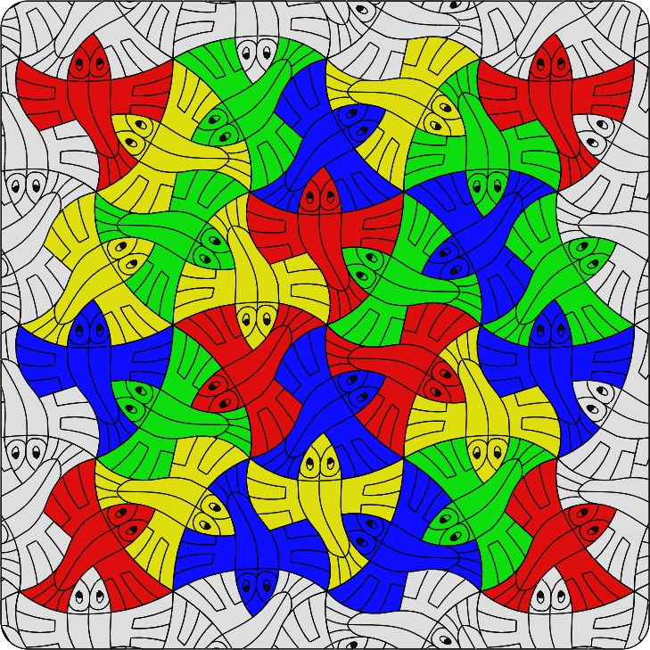

M. C. Escher Tessellation Puzzle
Inception
This was a personal project to make an art- and geometry- focused birthday gift for my brother's boys, who just turned ages 6 and 4 in the same month.
Concept
A jigsaw-type puzzle based on one of M. C. Escher's tessellations. All of the puzzle pieces are the same shape, but different colors so that the puzzle itself can be rearranged into different patterns. Additionally, on its back side the puzzle contains lines of text which, when unscrambled and arranged correctly, reveals a message wishing them a happy birthday and introducing them to the name M. C. Escher.
Tools
|
Materials
|
Method
- Search for suitable Escher tessellation.
- Create patternable unit based on Escher's art.
- Pattern iconic element to create full field.
- Trim to fit boundaries of stock material. 
- Generate .DXF files that can be read into Adobe Illustrator at the 3D printer's host computer.
- Place geometry of back-side message in Illustrator, then print with laser cutter.
- Place geometry from two different .DXF files on top of each other: one corresponding to the engraving, and one to the thru cuts. Print with laser cutter.
- Color front-side of fish with Sharpies in selected pattern.
- Scramble pieces to obscure message.
- Mail to the birthday boys.
While I really like some of Escher's more intricate tessellations -- for example, Sea Horse (No. 11) and Lizard (No. 56) -- I thought it best to choose something a little simpler. (The two young boys may not always be super gentle with their possessions, after all.) Ultimately I landed on a print of Flying Fish, which seems to be a variant of Bird (No. 44).
In this step, I imported an image file into a sketch in SolidWorks and started tracing using lines, arcs, and splines as necessary.
One thing that I found pretty quickly was that, despite the fact that they look identical, no two fish in Escher's drawing are exactly the same. It seems that he hand-drew each and every one individually. That briefly threw a wrench in my plans, since it had been my intention to lift one iconic fish from the original work, and then use patterning tools within the SolidWorks sketch and assembly environments to construct the rest of the field. I couldn't do that exactly, however, since slight variations in each individual fish make it unable to mesh perfectly with itself.
What I ended up having to do here, rather than copy any one specific fish shape, was to dive a little deeper into the geometry. I went looking for the iconic, basic, elements, so that I could map them to a simplified patternable geometry, and construct my own basic, iconic fish.
As it turns out, all of the geometry necessary to create this particular tessellation can be contained within a small unit centered around a single 30°-60°-90° triangle which intersects parts of three adjacent fish.
This one element can be copied and rotated about various points such that lines shown become different parts of a single fish. With just a little interpolation to smooth the lines blending one part of the geometry into another, I had my iconic fish.
Next Steps
This project is complete as it stands. I may revisit the concept for some future gift, however. If I do, there are a handful of things that I might change. I might choose a more complicated and intricate tessellation -- one that might be more fragile, at a time when the boys are a little more grown up and can be trusted to be more gentle with their toys. I would also aim to source a material with more regular flatness. Warping in the raw material caused the frame to be a little less than ideal, here. Still, I'm pretty happy with the end result.